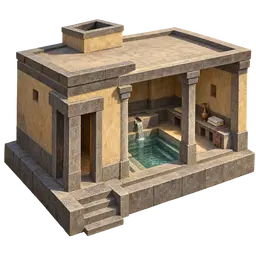
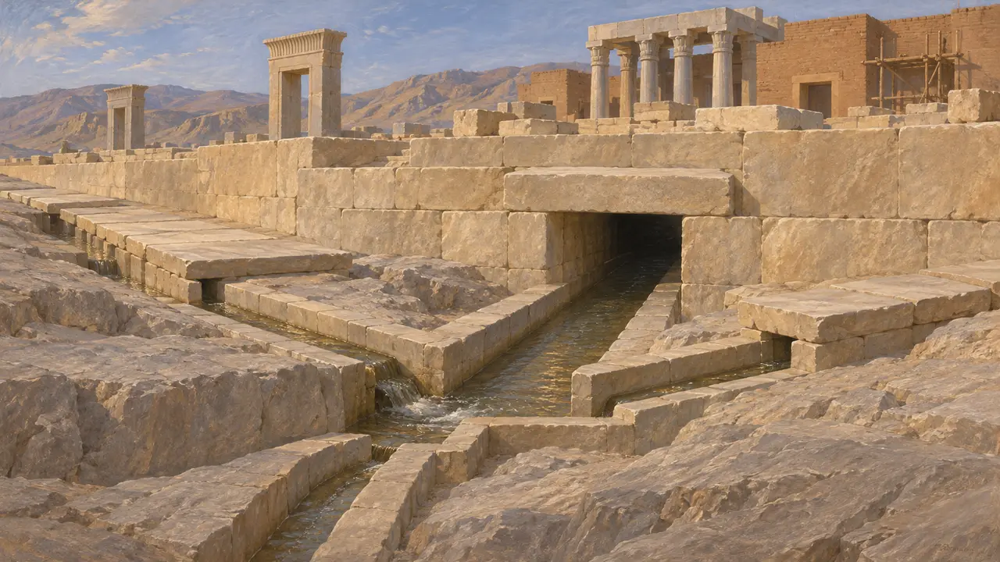
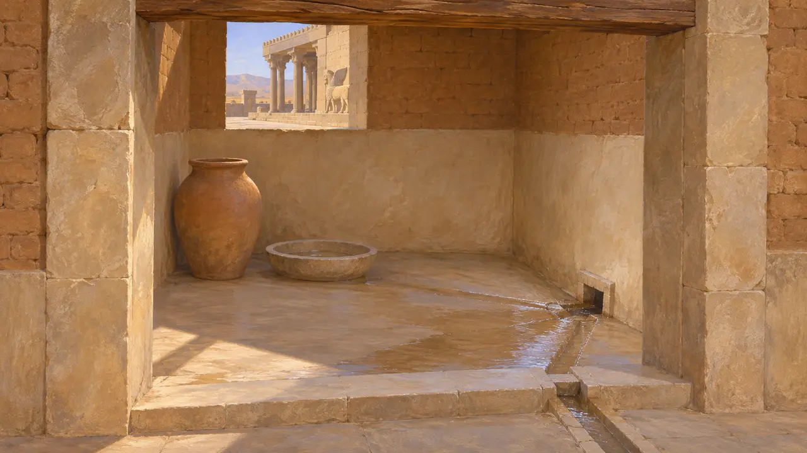
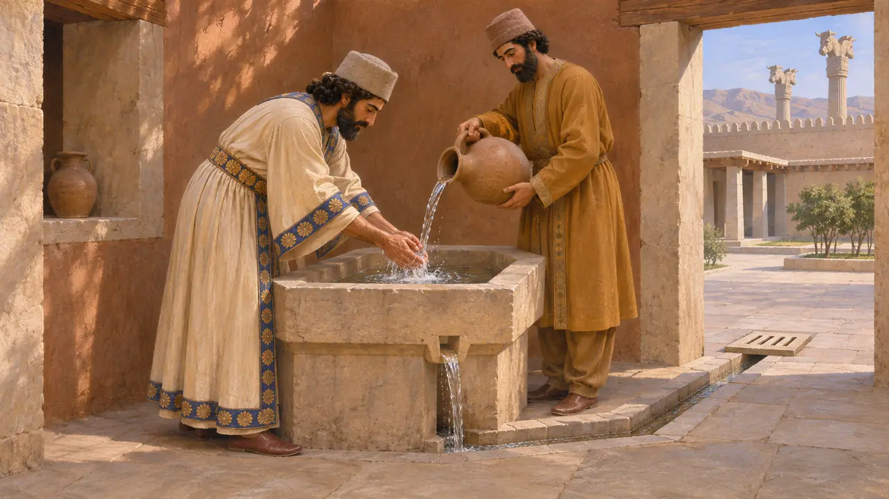
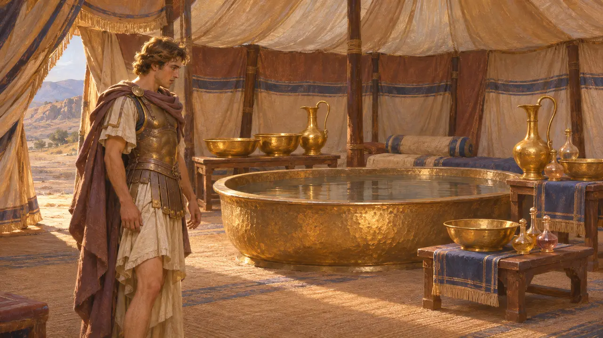

Baño del palacio
Aseos y desagües en los palacios aqueménidas, Persépolis, hacia 518-465 a. e. c.
Los palacios de los reyes persas contaban con desagües construidos y con estancias pavimentadas o enlucidas donde se podía verter el agua y evacuarla. Las excavaciones revelan un cuidadoso sistema de canales bajo la terraza de Persépolis. Aún se discute qué estancias servían exactamente para el aseo, y ningún texto conocido de la época menciona un baño.
En el juego: El Baño del palacio del juego es un servicio que usan las Casas del anciano y las Residencias nobles a menos de nueve casillas. Es una simplificación: los aseos palaciegos pertenecían a edificios reales, y nada indica que un baño compartido diera servicio a varios hogares.

Desagües bajo la terraza de Persépolis
En los documentosLos excavadores de Persépolis hallaron una red de canales tallados en la roca y construidos bajo la terraza. El sistema se trazó probablemente antes de que se levantaran encima los palacios. Evacuaba el agua de lluvia y las aguas residuales de tejados, patios y algunas estancias, alejándolas de la plataforma. En Pasargada, canales de agua construidos en piedra recorrían el jardín real, lo que demuestra la misma destreza en el manejo del agua.
E. F. Schmidt, Persepolis I, 1953; D. Stronach, Pasargadae, 1978

Qué estancias eran para lavarse
En disputaAlgunas estancias pequeñas de los palacios tienen suelos enlosados o enlucidos con desagües que conducen a las canalizaciones. Los excavadores han identificado algunas como cuartos de aseo o letrinas. Otros estudiosos creen que algunas eran cuartos de servicio o almacenes que simplemente necesitaban drenaje. Ninguna inscripción ni tablilla conocida de la época designa una estancia como baño, de modo que cada identificación se basa únicamente en el suelo y las canalizaciones.
E. F. Schmidt, Persepolis I, 1953

Respeto por el agua corriente
Relato antiguoHeródoto afirma que los persas no orinaban ni escupían en un río, ni se lavaban las manos en él. Estrabón, que escribió mucho más tarde, también describe la reverencia persa por el agua. Si los autores griegos están en lo cierto, probablemente se lavaban con agua recogida en jofainas que luego se desechaba, y no en los arroyos. Es posible que simplificaran una costumbre que solo conocían de oídas.
Herodotus 1.138; Strabo 15.3

El baño de Darío III
Leyenda posteriorPlutarco relata que Alejandro, tras la batalla de Iso en el 333, entró en la tienda capturada de Darío III. Allí encontró un baño provisto de vasijas de oro, jofainas y perfumes, y comentó que aquello, al parecer, era lo que significaba ser rey. La anécdota se puso por escrito más de cuatro siglos después. Está concebida como un relato moral sobre el lujo persa y dice poco de los baños palaciegos en tiempos de Darío I.
Plutarch, Alexander 20
Fuentes
- E. F. Schmidt, Persepolis I, 1953
- Herodotus 1.138
- D. Stronach, Pasargadae, 1978
- P. Briant, From Cyrus to Alexander, 2002
- Strabo 15.3
- Plutarch, Alexander 20